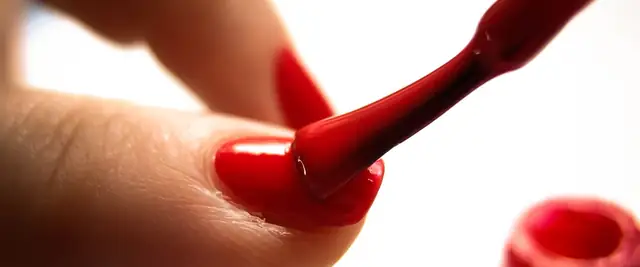
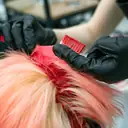
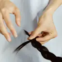
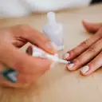
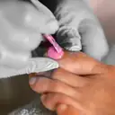
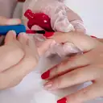
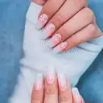
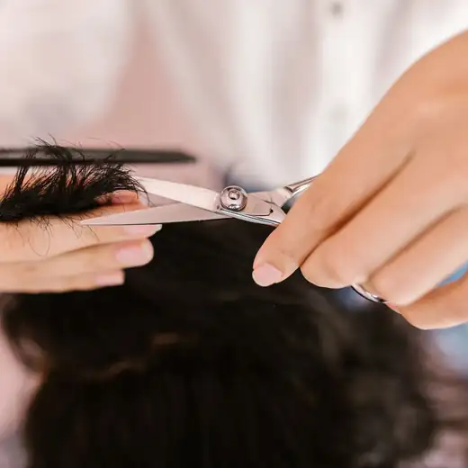

Noelia
Color y corte

Tocá un color y mirá cómo se pinta la página. Después armá tu turno con ese tono.
Tu tono: Fucsia
El tono viaja en tu mensaje de WhatsApp.
Elegí uno y seguí con tu turno, o consultá el valor.
Pelo
45 min
Corte a tu medida, con lavado.

Falta foto2 h
Cambio de color o retoque de raíz.
3 h
Aclarado de a mechones, con tonalizado.
40 min
Lavado y secado con volumen.
1 h
Para una fiesta o una foto.

Falta foto50 min
Trenzas para peinados del día a día o de evento.
Uñas

Falta foto50 min
Limpieza, forma y esmalte.

Falta foto1 h
Cuidado de los pies y esmalte.

Falta foto1 h 15 min
Esmalte semipermanente.

Falta foto1 h 30 min
Diseños a elección.
No hay servicios en este grupo.
Duraciones de ejemplo (Demo). El valor lo confirma el salón.
Elegido: .
Seguir con mi turno
Falta fotoElegí con quién querés hacerlo.
Color y corte
Uñas
Peinados y brushing
Nombres y especialidades de ejemplo (Demo).
Cuatro pasos: servicio, persona, día y hora.
Fotos de ejemplo (Demo).
Zona Centro. Dirección de ejemplo.
Martes a sábado, 09:30 a 19:30 (ejemplo). Domingo y lunes cerramos.